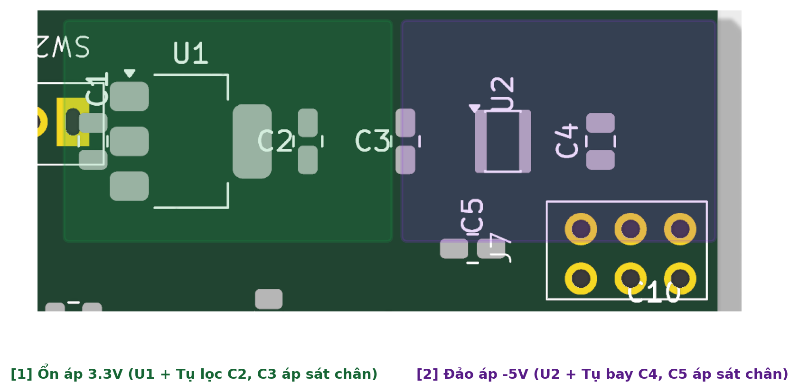
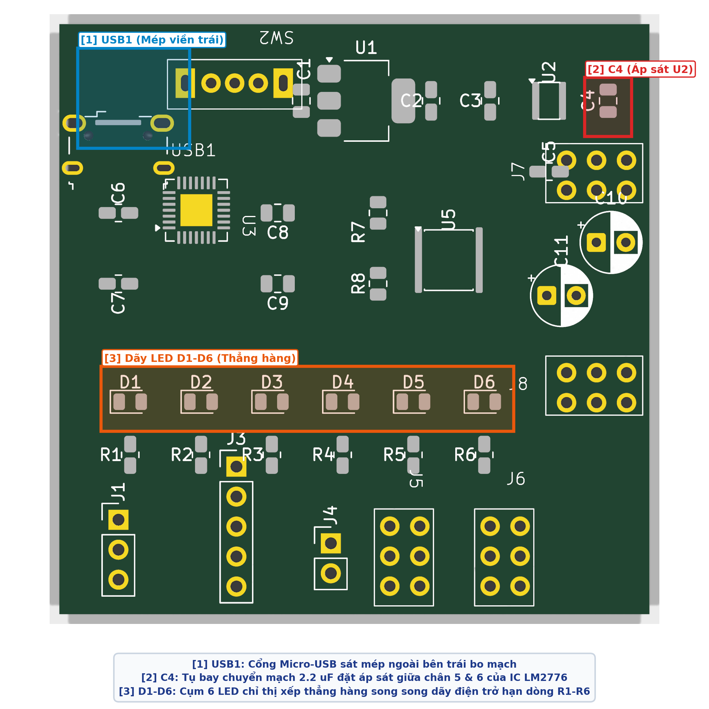
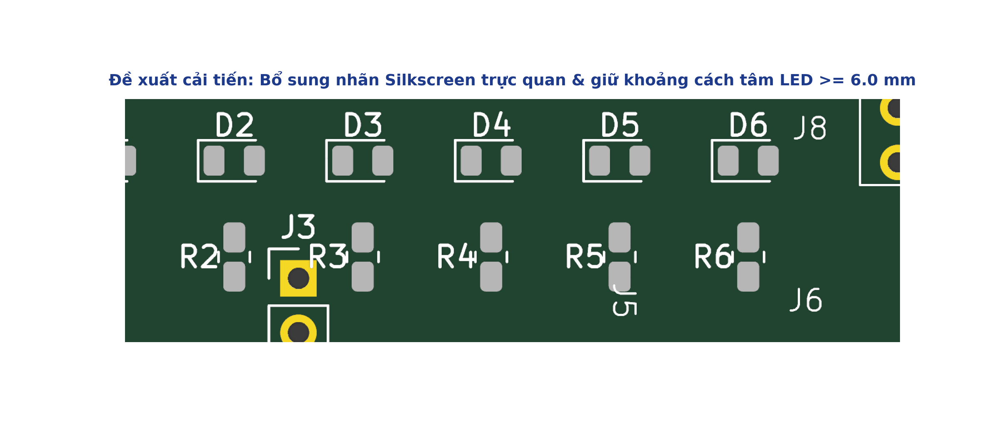
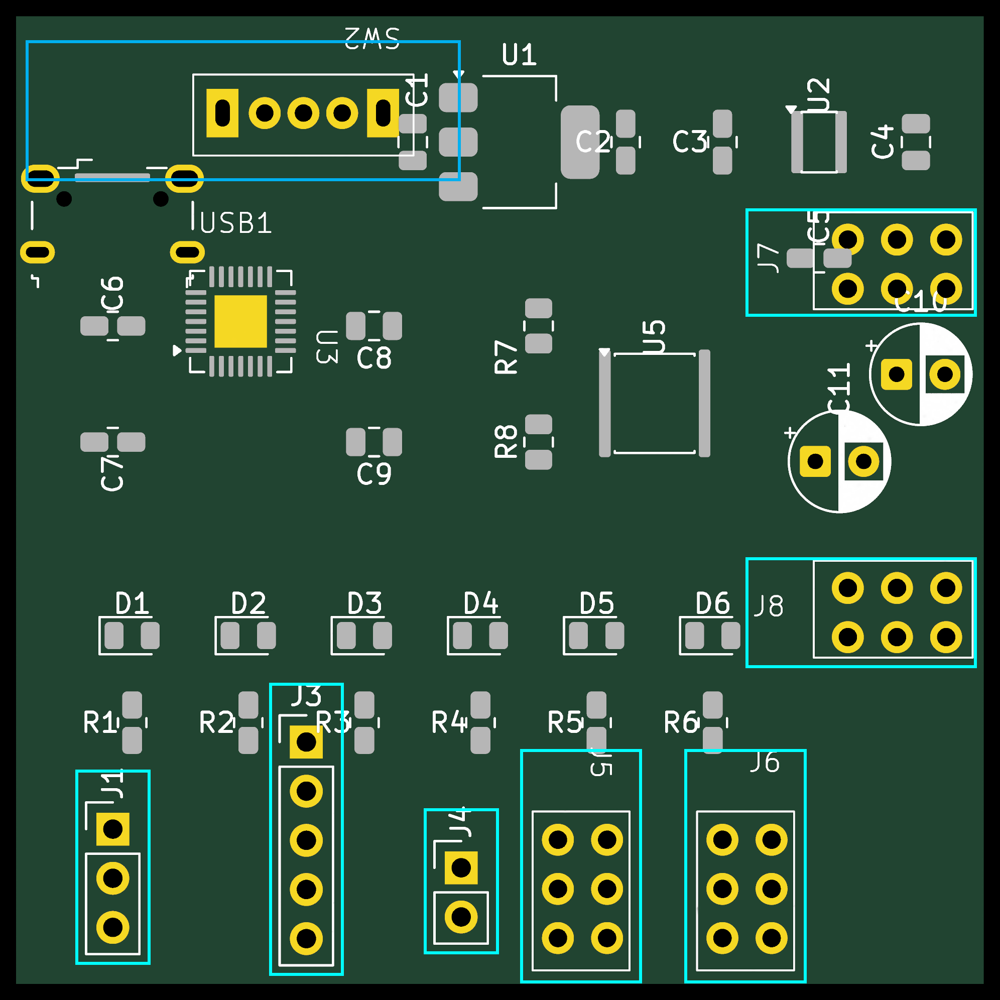
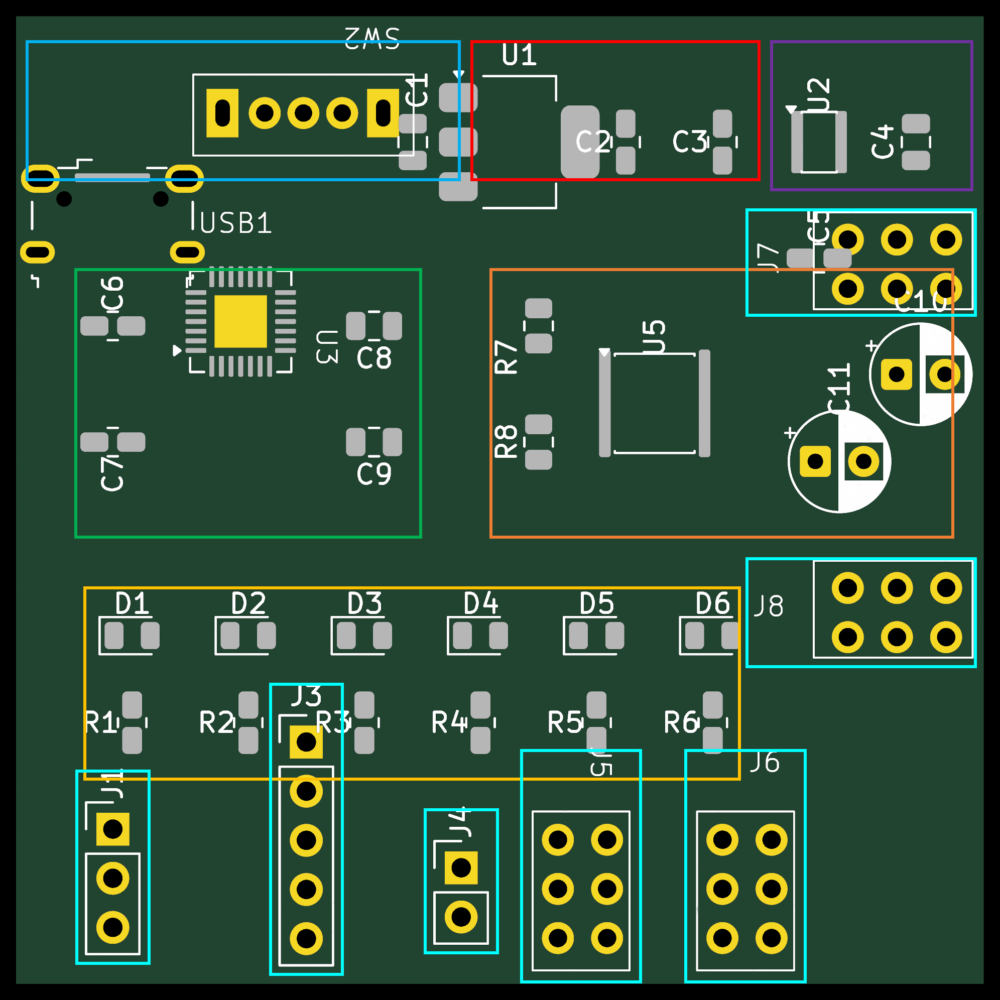
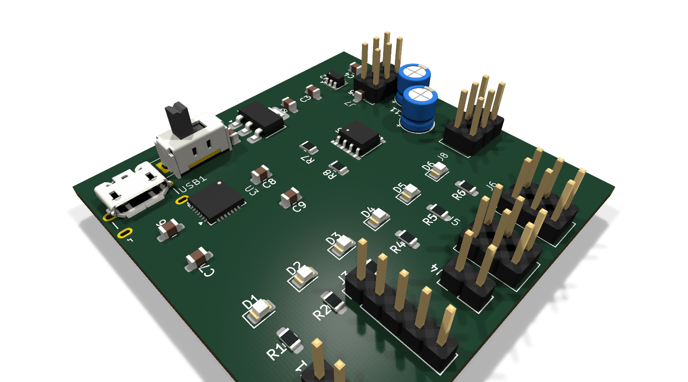

| Họ và tên: | Lê Ngọc Tường |
| MSSV: | 23207124 |
| Lớp: | 23DTV_CLC3 |
| Môn học: | Thiết kế mạch in PCB với KiCad (HK3/2025-2026) |
Trong thiết kế mạch in PCB, việc đặt các tụ lọc ngõ vào (Input Capacitor) và ngõ ra (Output Capacitor) áp sát chân của các IC nguồn (như IC ổn áp tuyến tính LDO AMS1117-3.3 hay IC chuyển đổi nguồn đảo áp LM2776) là quy tắc bắt buộc vì các lý do kỹ thuật sau:

Ba linh kiện tiêu biểu trên bo mạch nguồn cá nhân được phân tích lý do lựa chọn vị trí gồm:
USB1): Đặt sát mép cạnh bên trái bo mạch (tọa độ X = 30.0 mm, Y = 96.0 mm) với miệng cắm hướng thẳng ra ngoài mép bo. Lý do: Đảm bảo yêu cầu cơ khí, giúp đầu cắm cáp Micro-USB không bị cấn vào các linh kiện khác hoặc thành vỏ hộp (Enclosure). Đồng thời, đây là điểm bắt đầu của luồng cấp nguồn 5V, giúp dòng điện đi tuần tự từ trái sang phải mà không phải chạy vòng quanh bo mạch.C4): Đặt áp sát giữa hai chân chuyển mạch số 5 (C1+) và chân số 6 (C1-) của IC đảo áp LM2776 (U2) tại tọa độ X = 69.0 mm, Y = 97.0 mm. Lý do: Tụ bay C4 liên tục nạp xả đảo cực tính với tần số xung đóng ngắt 2 MHz. Việc đặt tụ ngay sát chân IC tạo thành đường dẫn dòng AC siêu ngắn, triệt tiêu xung gai nhiễu cao tần lan truyền sang khối UART CP2102 và khối dao động NE555.D1-D6): Xếp thành một hàng ngang thẳng hàng tại Y = 122.0 mm ở nửa dưới bo mạch, song song với hàng điện trở hạn dòng R1-R6 (Y = 126.5 mm). Lý do: Đặt ở vị trí thông thoáng, không bị che khuất bởi các module cắm ngoài hay tay người thao tác khi cắm cáp, giúp người dùng dễ dàng quan sát trạng thái của toàn bộ hệ thống cùng lúc (Báo nguồn 5V, 3.3V, -5V, xung Clock 1Hz, tín hiệu truyền/nhận RX/TX).
D1-D6) trên bo mạch mẫu được xếp quá sát nhau (khoảng cách tâm giữa hai LED chỉ khoảng 3.5 mm) và không có dòng chữ chú thích chức năng rõ ràng trên lớp Silkscreen (F.Silkscreen). Khi cả 6 đèn cùng sáng, ánh sáng bị tán xạ lẫn nhau gây khó phân biệt và người dùng phải dò lại sơ đồ nguyên lý để biết từng đèn hiển thị tín hiệu gì.5V, 3V3, -5V, 1Hz, RX, TX ngay phía trên từng LED tương ứng để người dùng nhận diện tức thì trạng thái bo mạch mà không cần tra cứu tài liệu.
Trong quy trình thiết kế mạch in chuyên nghiệp, các cổng kết nối (Connector, Header, Switch) luôn được định vị trước các linh kiện bán dẫn và linh kiện thụ động khác vì hai nguyên nhân căn bản:

Bo mạch nguồn đa năng gồm 38 linh kiện đã được phân bổ thành 7 khối chức năng hoàn chỉnh trên diện tích bo mạch 50 × 50 mm.


| STT | Nội dung kiểm tra | Quy chuẩn áp dụng | Kết quả | Ghi chú thực tế |
|---|---|---|---|---|
| 1 | Không có Footprint chồng lấn | Ranh giới lớp F.CrtYd cách ly |
ĐẠT (Pass) | Khoảng cách thân ≥ 0.5mm |
| 2 | Connector/USB/Header đúng vị trí và hướng | Miệng cắm quay ra ngoài mép bo | ĐẠT (Pass) | USB1, SW2, J1, J3-J8 đúng hướng |
| 3 | IC được bố trí theo từng khối chức năng | Linh kiện gom theo 7 cụm chức năng | ĐẠT (Pass) | U1, U2, U3, U5 phân khu độc lập |
| 4 | Tụ Input/Output đặt gần IC tương ứng | Chiều dài đường mạch ≤ 3.0mm | ĐẠT (Pass) | C2, C3 sát U1; C4, C5 sát U2 |
| 5 | Tụ decoupling đặt gần chân nguồn IC | Áp sát trực tiếp chân VDD/REGIN | ĐẠT (Pass) | C6, C7, C8, C9 bao quanh U3 |
| 6 | Không có linh kiện đặt quá sát mép PCB | Cách Edge.Cuts ≥ 0.5mm |
ĐẠT (Pass) | Pad linh kiện lùi vào trong ≥ 1.0mm |
| 7 | Đủ không gian để Routing | Kênh dẫn track thông thoáng | ĐẠT (Pass) | Khoảng hở giữa các khối ≥ 1.5mm |
| 8 | Đủ không gian cho hàn, lắp ráp và đo kiểm | Không che khuất điểm đo và header | ĐẠT (Pass) | Đầu que đo tiếp cận dễ dàng |